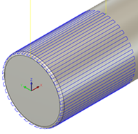
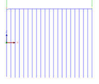

Spirale
Ligne
Circulaire
Spécifie le style des passes d'usinage pour un contrôle plus précis.
Spirale: usine la pièce en continu sur toute sa longueur. Un cercle complet est découpé à chaque extrémité afin d'assurer une finition nette.
Ligne: déplace l'outil le long de l'axe de rotation en ligne droite, l'axe de rotation n'étant utilisé qu'à la fin de chaque passe pour repositionner la pièce.
Circulaire: la pièce pivote en formant un cercle pendant que l'outil reste fixe lors de l'usinage. L'outil avance ensuite sur la distance requise pour usiner le cercle suivant.
|
 |
|
Spirale |
Ligne |
Circulaire |
 |
 |
 |
Vue latérale – Spirale |
Vue latérale – Ligne |
Vue latérale – Circulaire |